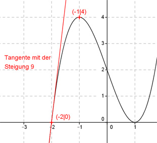

Aufgabe 18 Der Graph einer ganzrationalen Funktion 3. Grades hat in (-1|4) einen Extremwert und schneidet die x-Achse an der Stelle (-2|0) mit einer Steigung von 9. Wie lautet seine Funktionsgleichung?  Allgemeine Form einer ganzrationalen Funktion 3. Grades: f(x) = ax3 + bx2 + cx + d f’(x) = 3ax2 + 2bx + c f’’(x) = 6ax + 2b 4 Bedingungen: 1. Hat in (-1|4) einen Extremwert bedeutet zum einen: f(-1) = 4 --> a * (-1)3 + b * (-1)2 + c * (-1) + d = 4 --> -a + b - c + d = 4 I 2. Hat in (-1|4) einen Extremwert bedeutet zum anderen: f’(-1) = 0 --> 3a * (-1)2 + 2b * (-1) + c = 0 --> 3a - 2b + c = 0 II 3. Schneidet die x-Achse an der Stelle (-2|0) mit einer Steigung von 9 bedeutet zum einen: f(-2) = 0 --> a * (-2)3 + b * (-2)2 + c * (-2) + d = 0 --> -8a + 4b - 2c + d = 0 III 3. Schneidet die x-Achse an der Stelle (-2|0) mit einer Steigung von 9 bedeutet zum anderen: f’(-2) = 9 --> 3a * (-2)2 + 2b * (-2) + c = 9 --> 12a - 4b + c = 9 IV I * (-1) + III a - b + c - d = -4 -8a + 4b - 2c + d = 0 ---------------------- -7a + 3b - c = -4 V II * (-1) + IV -3a + 2b - c = 0 12a - 4b + c = 9 -------------------- 9a - 2b = 9 VI II + V 3a - 2b + c = 0 -7a + 3b - c = -4 ------------------ -4a + b = -4 VII VI + VII * 2 9a - 2b = 9 -8a + 2b = -8 -------------- a = 1 a = 1 in VI eingesetzt: 9 - 2b = 9 |-9 - 2b = 0 |:(-2) b = 0 a = 1 und b = 0 in II eingesetzt: 3 + c = 0 |-3 c = -3 a = 1, b = 0 und c = -3 in I eingesetzt: -1 + 0 -(-3) + d = 4 2 + d = 4 |-2 d = 2 Gesuchte Funktionsgleichung: f(x) = x3 - 3x + 2